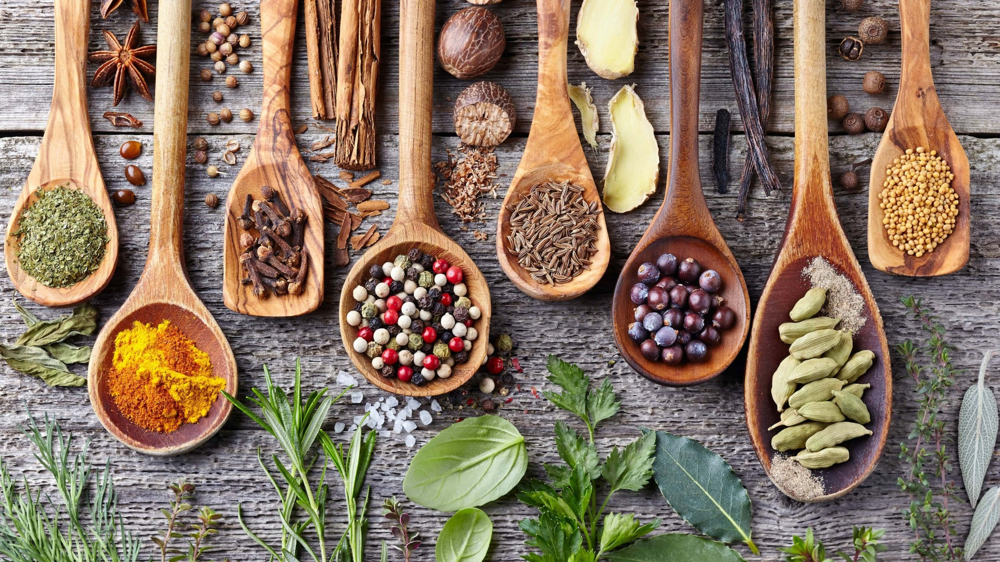

Klassische deutsche Gewürze Die wichtigsten Gewürze für authentische deutsche Gerichte. Zeit: 25 Min. Einfach
Kräuter selbst anbauen Einfache Anleitung für frische Kräuter auf der Fensterbank. Zeit: 25 Min. Einfach
 Gewürzmischungen selbst herstellen Rezepte für typisch deutsche Gewürzmischungen zum Selbermachen. Zeit: 25 Min. Einfach